莆田餐厅 x 华与华七年咨询合作总结
在业内，大家都在说华与华是本土营销咨询的 Top 公司。但你们说的不全面，华与华不仅仅是本土化营销咨询公司，还是全球化营销咨询公司。今天，跟大家分享华与华明星案例——莆田餐厅，作为全球连锁餐饮品牌，我们和莆田餐厅的合作，从一开始就是一个全球化品牌管理服务。
莆田餐厅是一家来自新加坡的餐饮企业。也是“新加坡中餐第一品牌”，连续 5 年摘得米其林一星殊荣，深受蔡澜、林青霞、孙燕姿、张智霖袁咏仪夫妇等诸多名人的喜爱。
2015 年是莆田品牌发展史上一个关键节点，这一年莆田决定进军中国大陆，选择“华与华”作为进入中国的第一站，此后展开连续 7 年的深度合作。7 年时间里，我们持续不断地为莆田各区域市场提供在地化服务。通过一个又一个具体的产品，一次又一次的扎实市场动作，给莆田带来切实的生意增长！从 2015 年开始，莆田的版图从新加坡到印尼、马来西亚、菲律宾等地，已在亚洲 5 个国家、 19 个区域开设 90 多家分店。华与华立足全球市场，从大中华的品牌管理到各区域品牌统一管理，我们有幸参与到莆田全球化品牌建设中，并见证了莆田品牌全球化的整个发展历程。
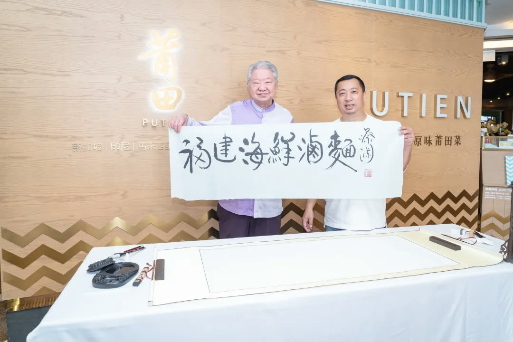
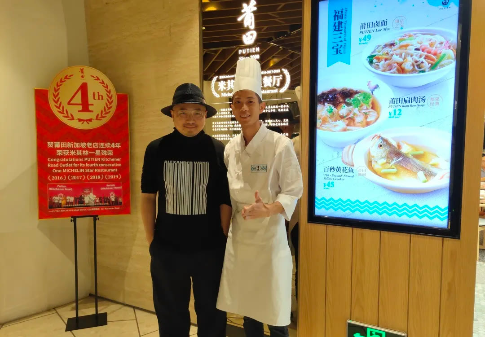
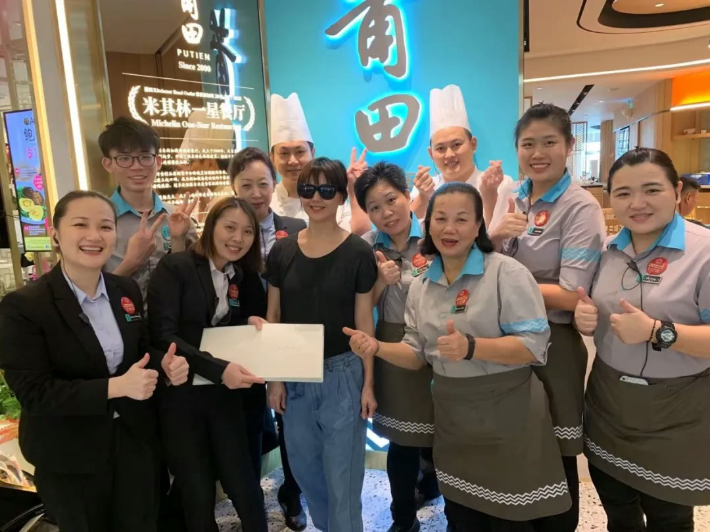
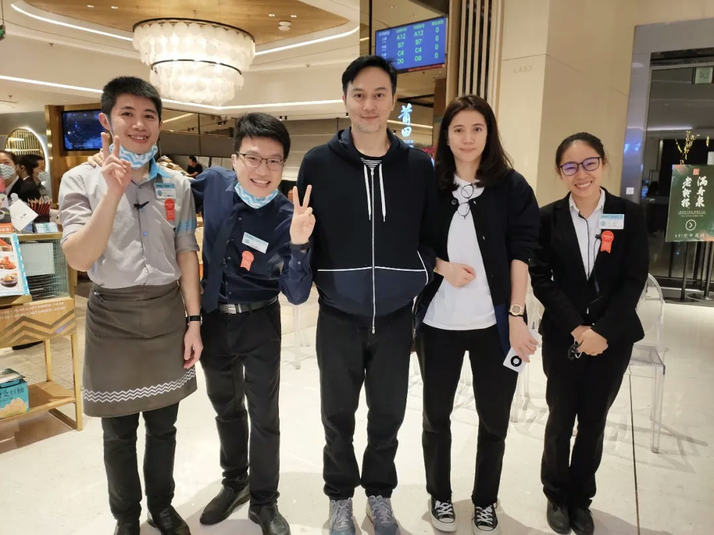
全球化品牌管理是个双重挑战，既需要全球统一管理，积累品牌资产；又需要因地制宜制定对策，适应各区域文化背景和社会环境的差异性，这是所有全球品牌管理当中不得不直面的挑战。莆田的全球化管理，不仅是品牌的输出、文化的输出，更是产品和传播的输出。长达 7年的合作期间，我们是如何做到“全球品牌，中国管理”，从 0 到 1 助力莆田成为新加坡国际连锁中餐第 1 品牌的呢？
阶段 1
为品牌定心
品牌定心，让企业少走弯路
做咨询不仅仅是帮企业做“战略咨询”，同时也是帮企业家做“心理咨询”。企业的很多动作，都来源于企业家的心理焦虑。合作之初，华与华为莆田餐厅提供的最大价值就是二个字：定心，为品牌定心！莆田餐厅在刚进入中国市场的时候，面临两个突出的“品牌问题”：一是，莆田商标因是行政地名，无法取得中国注册，要不要改？二是，很多人说“莆田”两个字给人的印象是江湖游医，在国内的联想不大好，担心这个名字会不会给企业带来牵累？解决这个问题，第一步就是进行企业寻宝，这也是华与华一项非常重要的工作。我们认为一个企业能走到今天，就是因为他做对了一些事。但往往学多了、想多了之后，反而走偏了，自己把好的东西丢了。
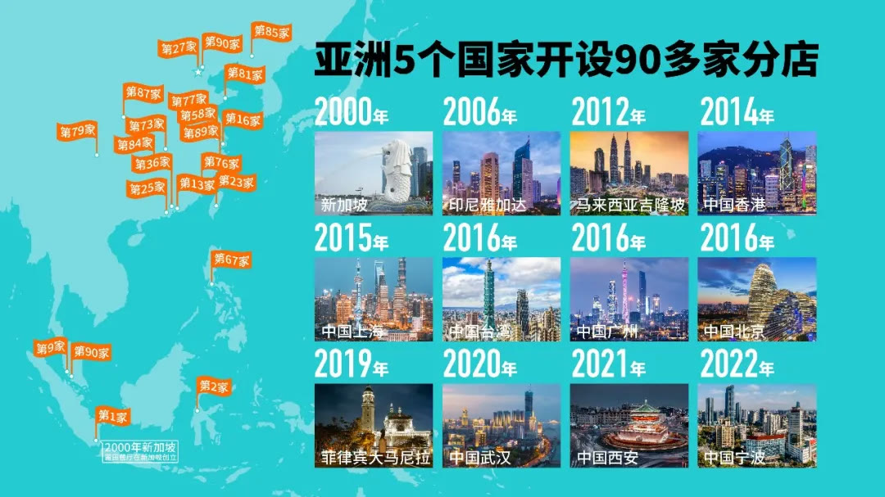
企业寻宝的过程就是帮助企业重新找回、擦亮他们多年前、甚至创业初的做法，然后把这些“宝贝“进行放大，而不是一味地求新求变。这也是华与华经营使命的体现：让企业少走弯路。我们在进行企业寻宝时，发现“莆田”这个名字从创业初就在使用。 2000 年莆田餐厅创始人方志忠先生，从福建莆田移居到新加坡生活，因为思念家乡的美食决定创办莆田餐厅。在他看来家乡菜就用家乡名，不需要太复杂，这么多年已经成为重要的品牌资产之一。
在华与华方法里，我们强调“品牌资产”和“品牌资产观”，品牌资产就是给企业带来效益的消费者认知，做任何一件事，一切以是否形成资产、保护资产、增值资产为标准，对那些能形成品牌资产的，就不要改动，要坚持。所以，回答第一个问题，“莆田”既然已经在全球注册（除中国外），并且使用了那么多年，自然是要沿用的。在中国市场就把“莆田”两字和英文名 PUTIEN 一起使用，形成“莆田 PUTIEN ”绑定组合名。对第二个问题，可以说这就不是问题，如果莆田品牌联想不好，那就让这个名字因为我们的努力而变得美好，让我们重新赋予“莆田”美好、美食的联想！
阶段 2
以水波纹建立超级符号
莆田水波纹是人类学的成功！
原力觉醒，重拳出击
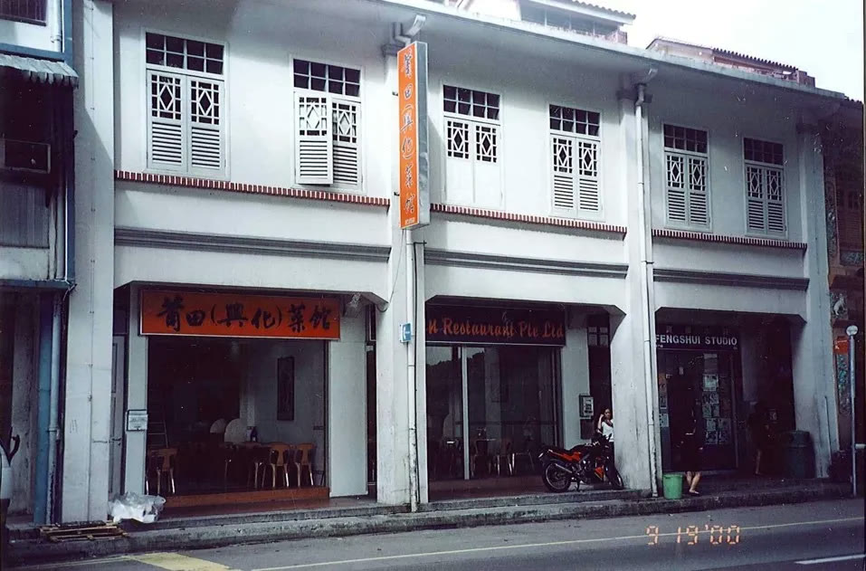
超级符号是我们一切工作的起点，也是我们管理全球品牌的起手式。莆田向全球品牌转型的关键时期，我们给莆田做了一个重要的超级符号——锯齿状的水波纹。
华与华为莆田餐厅创意的水波纹超级符号
因为这就是一个人类学意义上的设计！什么是人类学意义上的设计？就是原始人的设计。毕加索曾经说：“优秀的艺术家模仿，伟大的艺术家剽窃。”我们所有的艺术创作，都是对原始人艺术的剽窃。原始人怎么设计，我就怎么设计。
一万年前，从原始社会的陶器时代就开始运用水波纹作为符号。一万年后，水波纹成为莆田全球通用的超级符号，这是积蓄了一万年的原力！
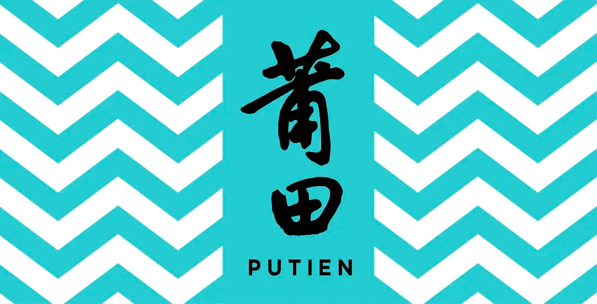
几何纹样是最原始的美，深入人类几十万年的潜意识，其审美历史远远在文字出现之前，也在绘画出现之前。锯齿状的水波纹早在陶器时代就成为必不可少的文化符号被广泛应用，这种神秘的几何图案所具有的魔力远大于其审美的价值。
今天走进全世界任何一间博物馆，纽约的大都会博物馆、中国的国家博物馆，这些民族之间相互并没有联系。但是，他们装盛食物的陶罐碎片上面，都有水波纹纹样。只要是人，看见它就会原力觉醒！
条纹设计看起来很简单，但是什么比例最美？这是个问题！美的设计，不是一个比例拉大放小，而是不同大小、粗细和间距要有不同比例。华与华的超级符号是颠覆 VIS 思维的设计思想，是对设计思想和设计美学的拨乱反正。从标识设计上，超级符号设计聚焦于解决问题，始终服务于最终目的，而不是无序发挥，这就是美学的根本。超级符号的纹样设计，首先从美学上定义，是“抽象美的第一名”。黑格尔在他的《美学》一书中，首先就讲抽象的美，在抽象的美里，又把“平衡对称，整齐一律”列为第
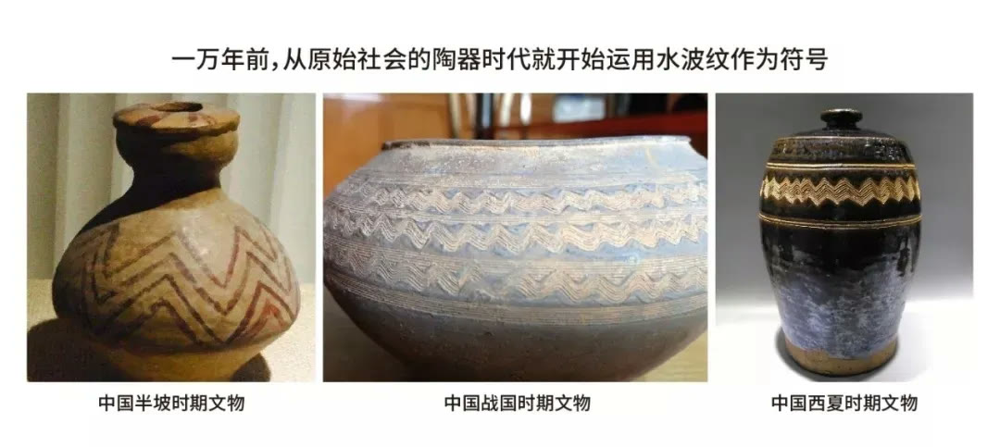
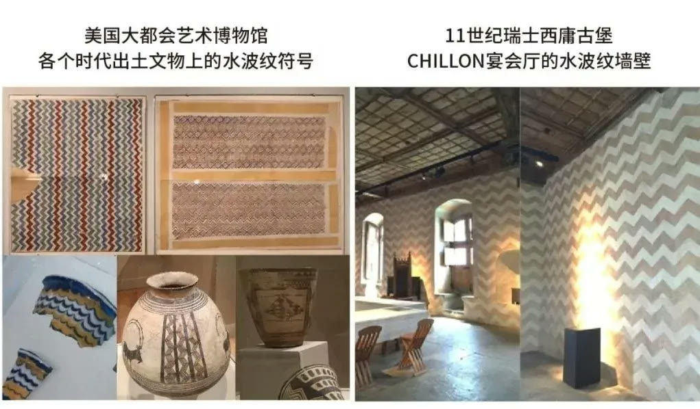
一，这和华与华的设计方法也是一致的。
通常我们尽量使用具象的设计，而避免使用抽象的设计。因为抽象的形象不易理解、记忆和描述。在华与华的超级符号设计实践中，我们广泛地运用整齐一律和平衡对称，再加上“四方连续”，这就构成品牌纹样的设计，这是有美学理论支撑的。莆田的水波纹就是这样的符号！
不要装饰，要强势！“同一个记忆碎片，同一个品牌印象”。这就是华与华方法做品牌体验的一个重要原则，撕成碎片也认识你。
这种线条性、准确性、同一性的，可重复的、准确的形象，创造出一种盛大的仪式感，就像国庆节的阅兵仪式一样。当它作用于人的视觉，可以释放出巨大的心理和社会能量，这是巨大的“视觉权力”，是视觉的帝王学。当这个设计运用于市场，消费者并不是站在评价者的角度，他们做出的是直接的、纯粹的反应，就是接受这个美，并且按照这个美的指引行动。
当所有人问的是美不美，我们要的是货架
货架思维是华与华设计的底层逻辑，一切创意要以货架为导向，产品出现的一切场合都视为货架。对于餐饮企业来说，商圈是货架，门店是产品，店招就是包装。我们的店面就是陈列在商圈货架上的一个包装，要把门头当成快销品的包装来设计，想尽办法在货架上释放信号争夺顾客的注意力，让消费者第一眼就看到你。
莆田水波纹就是决定性、超强势的视觉战略。醒目的水波纹和大面积的莆田蓝成为品牌最具代表的视觉符号，让门店跳出货架，在商圈陈列中获得最大的视觉冲击力，让莆田水波纹秒杀一条街!
阶段 3
让超级符号走向南洋
中国设计，全球统一
超级符号下南洋！
一举刷新海外中餐新高度，成为新加坡年轻人愿意消费的第一中餐品牌对于连锁餐厅而言，门店就是营销的主战场。每一家莆田餐厅的门店，本质上都是一套信号系统。2015 年在莆田全球首家样板店，我们为莆田设计了整套符号系统，将门店打造成品牌传播的最强刺激信号，为莆田设计了整套战斗套装——门店信息炸药包，并在中国激烈竞争的餐饮市场得到了成功的验证，我们有信心这套符号系统拿到任何一个国外市场都能所向披靡。
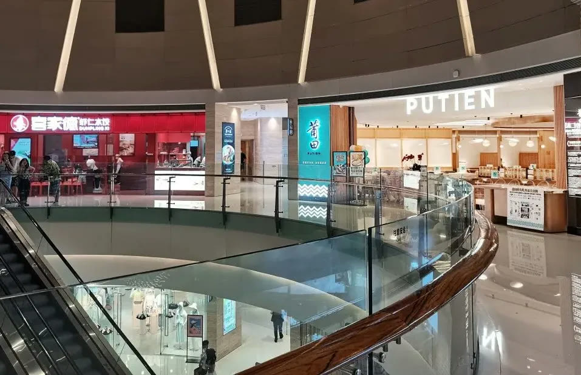
新加坡是莆田的大本营，在海外市场仍然保留着最初创业时的样子，传统中式的门店空间风格，大部分老顾客都是家庭客为主，年轻的顾客并不多，我们如何通过超级符号帮助莆田在新加坡当地焕发新的活力？
和华与华合作前的莆田餐厅
2017 年莆田启动海外市场老店翻新计划。我们以 KR 老店为首，以中国大陆餐厅为样板，联动当地 12 家门店率先进行了全球门店翻新工程。一时间在海外市场掀起一股水波纹的消费浪潮，让莆田餐厅彻底火了，成为当地商场人气 NO . 1 餐厅，很多大陆来旅游的游客还专门到门店用餐打卡。店长高兴地说：“我们在当地开了 6 - 7 年，已经是老店了，没想到品牌翻新之后就不一样了，现在我们不仅是商圈内客流最多的门店，连年轻人都多了起来。”
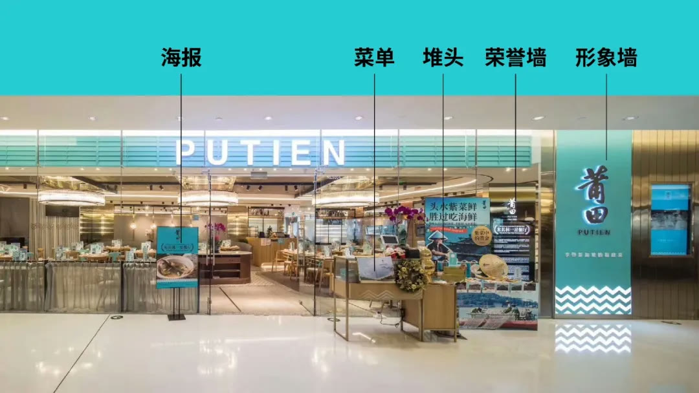
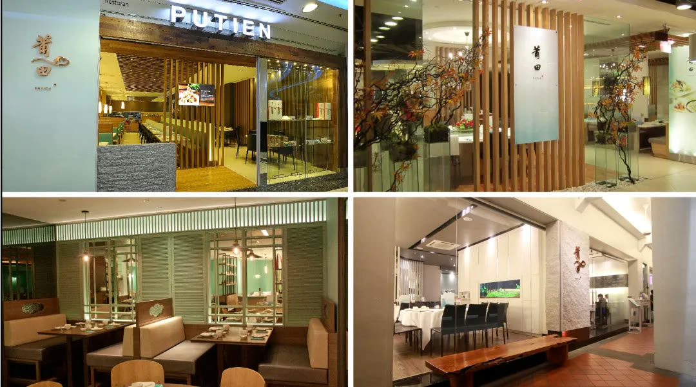
我们用华与华超级符号方法，改变了以往海外中餐在全球餐饮市场内，老旧、管理落后的印象，一举刷新了海外中餐的新高度、新标杆！实现了莆田餐厅全球门店大统一。
和华与华合作后的莆田餐厅
超级符号带来超级惊喜！ 2018 年新加坡营业额同比上涨 21 %，客流量同比上涨 15 %。最突出的一家门店营业额上涨 36 %，客流同比上涨 35 %。 2019 年莆田新加坡 RWS 店荣获大众点评必吃榜，成为大陆游客到新加坡必吃地标!从新加坡市场的老华人品牌到新加坡年轻人愿意消费的第一中餐品牌。用莆田餐厅创始人方志忠的话来说：“莆田在国内市场获得的成功，反哺了海外市场。”
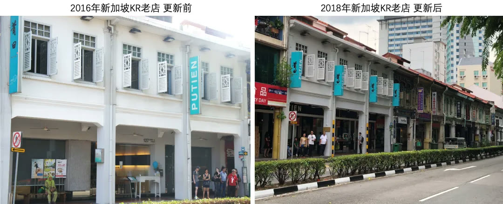
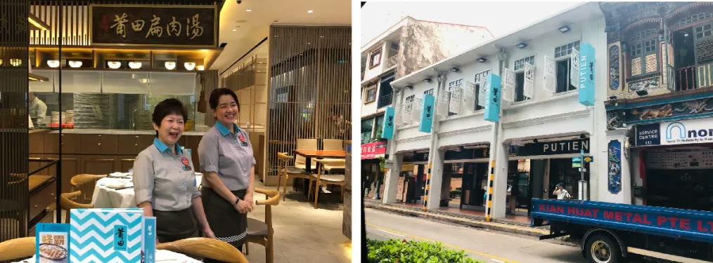
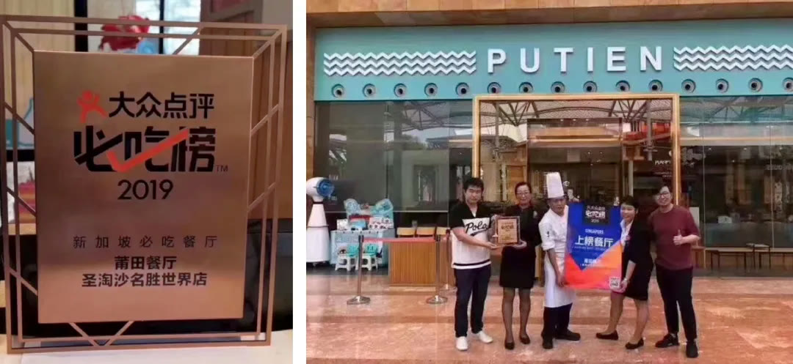
不花钱的改善！把菜单设计置顶为战略设计一切经营活动围绕着菜单，餐厅最主要的销售工具就是菜单，华与华把菜单设计置顶为战略设计，提高菜单的销售效率，是很重要的工作。
2022 年莆田迭代第 7 代菜单版本正式面市
对于餐厅而言，餐厅的品牌就是靠一个个菜品建立起来的，菜品的价值能不能被感知，关键的载体就是菜单。菜单最重要的是突出招牌菜。我们去一个陌生的餐厅，总会问：“你们有什么特色？有什么招牌？”这么简单的事，但是很多餐厅都没有在菜单上突出出来。同样一张照片一个菜名一个价格，你打上“必点”两个字，他就点了，要知道消费者更喜欢被选择引导、根据指令去购买。产品结构是底层逻辑，是点餐的决策顺序！合作初期我们发现莆田的菜单一共有 59 道菜，大多情况下是按照销量和利润来规划整体的上架和下架，但是卖的好产品并不突出。在我们看来，产品是企业和顾客的联系。每个品牌都要有自己的拳头产品。一个餐厅如果你的产品很多，那么消费者对你的印象就比较分散，很难形成统一，也无法形成话题和播传。
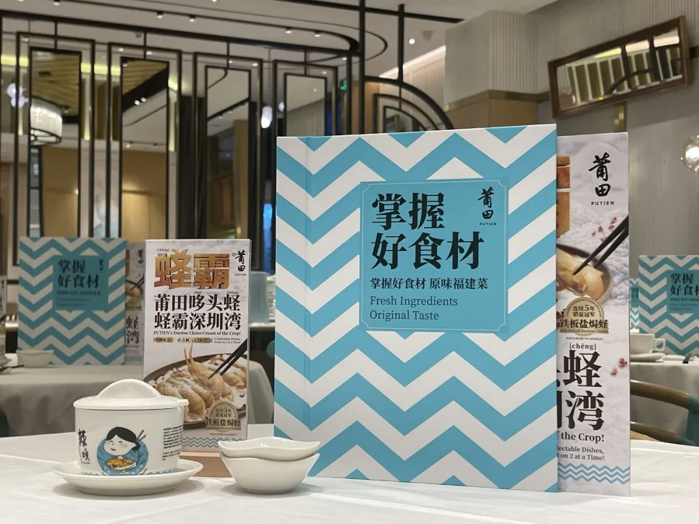
2015 年第一次提案时，我们就为莆田提出了产品结构的重要调整举措。通过对菜品的数据分析，我们筛选出具有独特性、故事性、顾客口碑高、销量高且保持长期稳定的10 道菜品，组成“莆田 10 醉”打造成品牌的拳头产品推出，这不仅进一步深化了福建菜系特色，也使整个菜单主力结构更加集中。“莆田 10 醉”的魔力，还在于下指令，它关掉了消费者大脑的电源，消灭他们的思考，在消费者心里形成快捷键，你照着点就行，从而大大的提高了点餐效率。
图上价格为示例
菜品“呈堂证供”越完整，顾客下单就越轻松！菜单结构设计清晰了，产品的呈现也有机关。我们把价值做到命名里、把购买理由写进文案里，通过好食材的可视化、卖点 icon 化、菜品符号化，罗列出每一道菜品的“呈堂证供”，这样就能让每一个进到餐厅的人，哪怕一开始不知道点什么、吃什么，看完也能快速决策。在门店高峰期，这样一本丰富的菜单还充当着“无声导购员”的角色，自己就能把菜卖出去。
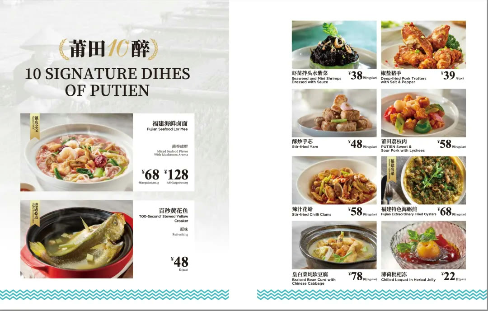
一图制胜！把菜品拍摄当做菜品开发的一部分。在餐饮行业，菜品就是最重要的购买理由、是产品开发。尤其菜品的拍摄、海报的设计，不光是视觉的呈现，更是食欲的设计，要找到菜品最诱人的符号，定格在那个瞬间。货卖一张图，一张图就是购买理由，不光要刺激人的眼球，还要刺激人的味蕾，勾起人的食欲，要看到就流口水、就想去吃。
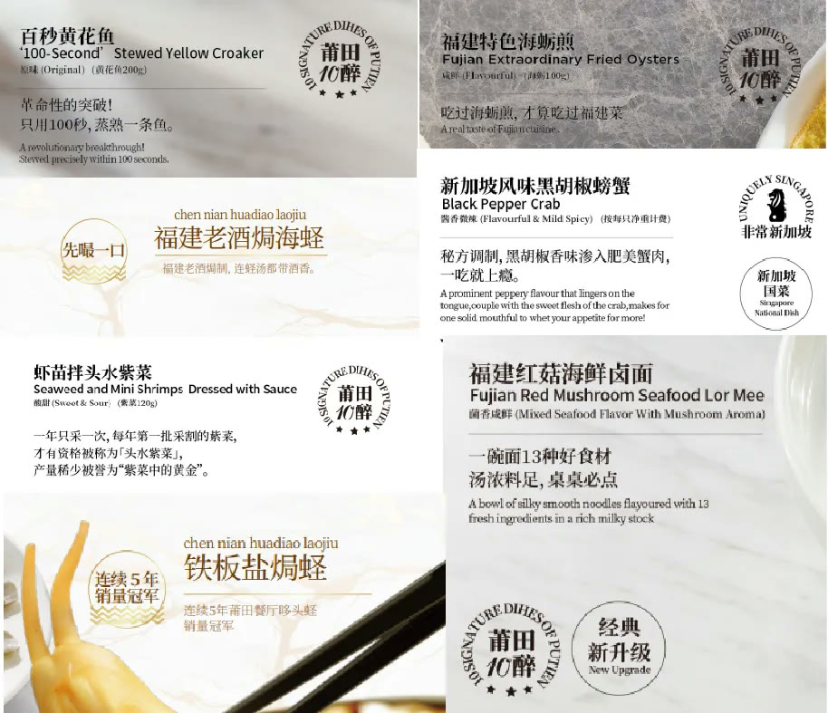
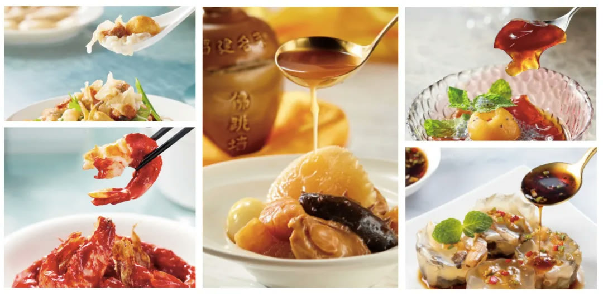
事实证明这的确是非常有效的一招。在新加坡、香港、上海、北京等地市场走访时，每当我问到门店店长卖得最好的菜是什么，所有店长告诉我的都是“莆田 10 醉”。“莆田 10 醉”的诞生，一炮打响了莆田首个拳头产品，成为全球门店的揽客利器、营收贡献主力军。目前，全球门店平均每家店的“ 10 醉”产品营收占比高达 40 %。
阶段 4
确立全球品牌管理战略
华与华营销日历开山之作
莆田食材节， 7 年坚持不动摇
决定莆田品牌全球战略的一次关键对话2015 年 10 月 16 日，华总头一天在新加坡参加完莆田 15 周年庆典晚宴，第二天一早就和方叔叔相约金沙酒店旁边的跑步道晨跑，两个人边跑边聊，方叔叔突然停下，发出了灵魂拷问：“华杉，全球品牌怎么管？”我们说问题即答案。当你找对最终目的就能找到正确答案。全球品牌怎么管这个问题，其实问的是如何在全球市场建立起步调一致的品牌传播推广动作，同时又能形成全球顾客对品牌的统一认知。莆田的足迹遍布在新加坡、印尼、马来西亚、中国香港等地，在没有和华与华合作之前，各区域各自为阵，各有各的传播动作，没有形成全球品牌一呼天下应的品牌声势，传播动作太多，浪费了大量的人力物力，在兵法原则上这可是大忌！
动作多、落子少、资源分散、没有积累…
我们做营销传播，实际上是在管理“品牌传播的声音场”。让所有人在同一时间只说一个事、只传一句话，保持统一的节奏，才能形成沟通的枢纽，这样也就形成了管理大众的集体印象，在消费者心中建立统一、持久的品牌认知。相反，如果大家对品牌的印象很分散，那就无法形成话题和播传。
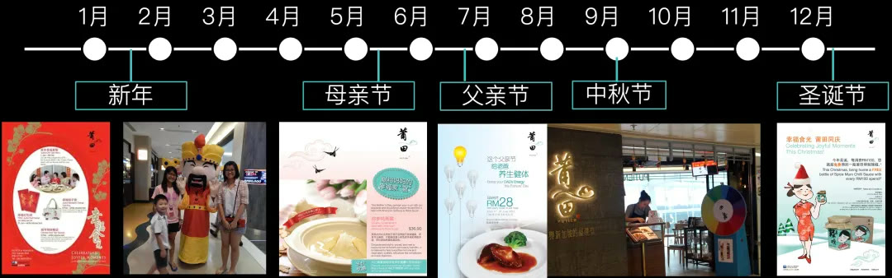
回答这个问题，我们要先找到莆田的事业理论是什么？前期在做品牌资产扫描时发现“食材”是流淌在莆田的血脉基因，也是莆田独有的资源禀赋。只选用来自原产地的好食材，只用食材最精华的部分， 20 多年通过持续不断地创造对食材讲究的文明，这也是莆田餐厅一路走来深受顾客喜爱与好评的原因所在。
事业理论是最底层的经营哲学，先有事业理论才有成功路径。事业理论就两个词，一个是事业，你要给客户创造什么价值；一个是理论，你的方法论是什么。任何一个事业要根深叶茂、基业长青，一定要找到文化母体，有事业理论。三分靠厨师，七分靠食材，掌握好食材，原味福建菜。这就是莆田的事业理论，是我们的产品科学，更是企业一生的事业！“三分靠厨师，七分靠食材”这句话说出来一定是没有任何人能反驳，而且马上就能记得住。“掌握好食材，原味福建菜”，既是事业理论也是品牌谚语，是企业家一生的志向！尤其“掌握”这个词属于很强有力的词，代表企业家的决心和承诺。找到这个事业理论后，我们为莆田提出了管用 100 年的“好食材战略”。莆田好食材战略是企业营销管理战略，更是战略定位的真正实践者。通过食材节统领起企业内部行动和外部传播，从战略定位、企业经营、产品研发、品牌传播 4 个纬度领导起整个企业的运转，倒逼企业的经营管理系统。
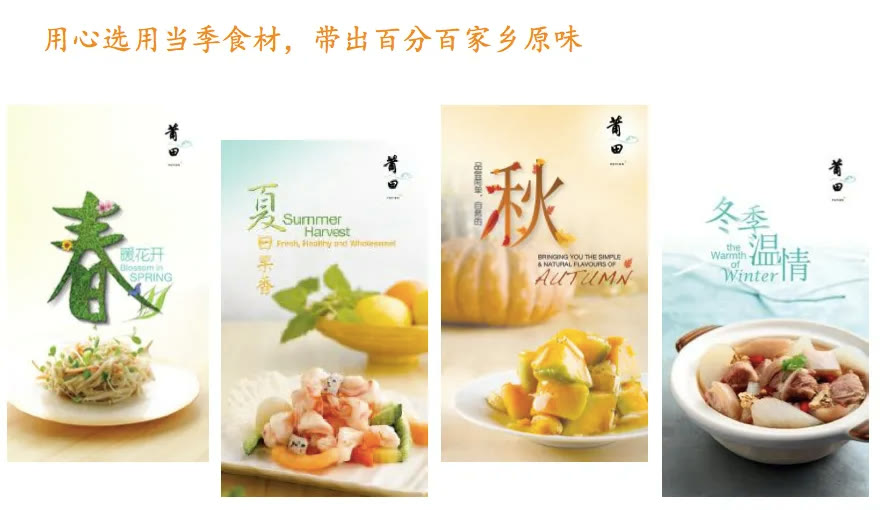
基于“好食材战略”，我们制定并推出了莆田的营销日历，这也是华与华首个营销日历开山之作——莆田食材节。每年在固定时间，根据时令推出当季主打食材，形成相对固定的销售主题。任何一个企业和顾客的联系，要尽量的集中和有节奏，最好能形成习惯的共同体。越是形成记忆的品牌，就越容易帮助消费者进行决策购买。从长久来看，顾客对品牌的主动关注甚至会潜移默化的转变为来自潜意识中的本能消费行为。所以，品牌一定要形成自己的营销日历。为什么叫营销日历呢？一方面日历是循环往复的，另一方面日历是有固定节拍的。营销日历其实就是“品牌节日”，每年固定时间，重复同一个推广活动，培养消费习惯，形成消费者“驯养”。就这样， 2015 年在方叔叔和华总的一次跑步中，达成了莆田全球品牌传播管理的共识。行，就干食材节！
坚持就是运气，苦力创造奇迹！创意是个脑力活儿，也是体力活儿，归根结底是苦力活儿。食材节课题的敲定并不是成功的关键，成功的关键在于执行。回想起来，做第一届食材节时，我们面临着 2 大难题——难在没人、难在没资料。那时莆田刚进入中国市场，还没有成型的团队，所有关于好食材的资料并不是现成的。什么是好食材？好食材有哪些？标准是什么？在企业内部并没有系统的梳理过，当时跟我对接的，只有莆田当地一个刚上任的采购经理。一切都是从 0 开始摸索。
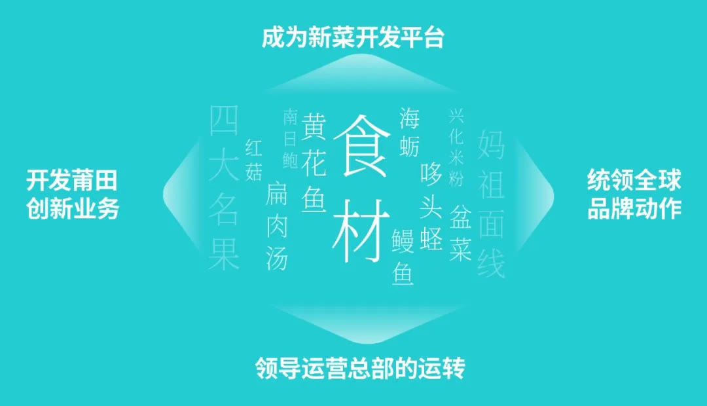
怎么办？干呗！没有条件也要创造条件，华与华精神就是拼尽全力，绝不敷衍！
创作没有捷径，只有下苦功，出苦力！莆田项目就是对这 6 个字最好的知行合一！从没想到作为咨询顾问的我还要上山采菇、下海挖蛏。我们去到福建的田间村头，带着客户去一线挖掘素材，展开了一场声势浩大的田野调查。印象最深得的就是红菇的找寻，在武夷山的原始森林里连路都没有，湿滑陡峭、草长得比人还高，上山全靠爬，下山全靠滑。
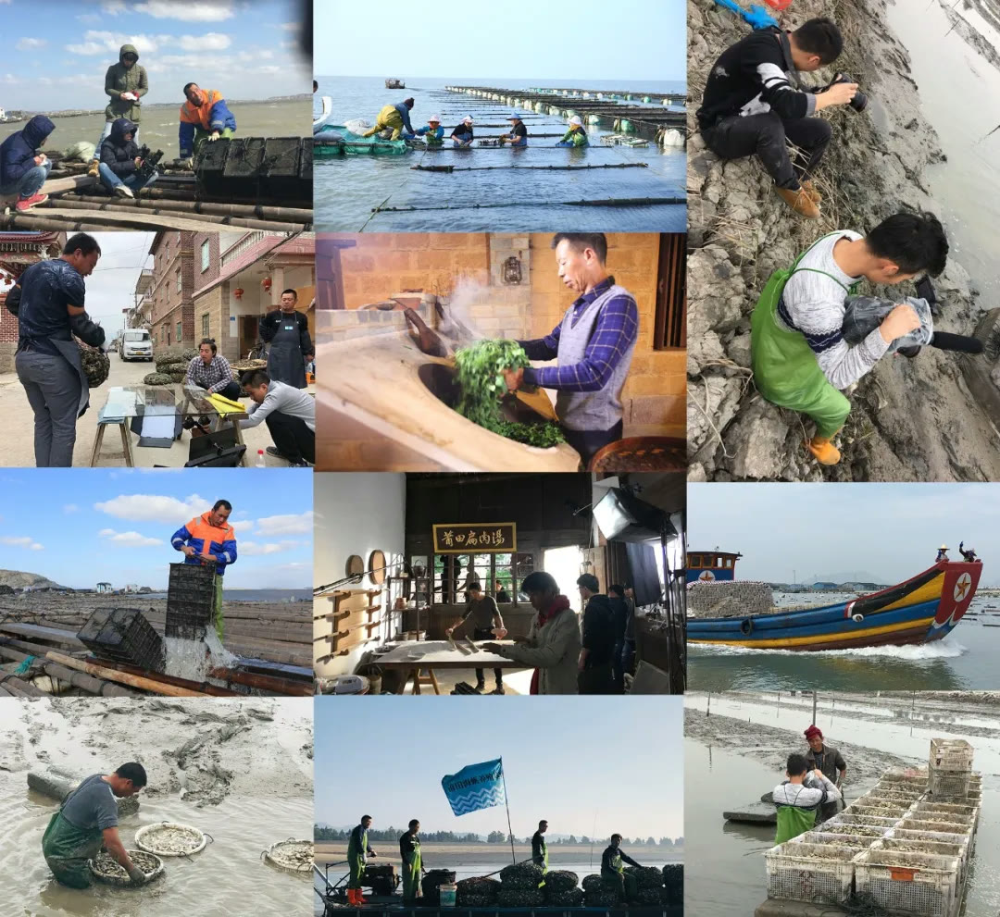
为了揭秘野生红菇的成长过程，徒步 5 小时扛 40 多斤的设备爬 75 度的陡坡，就为了揭秘红菇从冒头到绽开的全过程，中间经历了无数次摔跤、滑坡、甚至还遇到了蛇，后来下山后老乡才偷偷告诉我们红菇山的旁边就是悬崖峭壁，这简直是用生命在做项目…上山下海，田间乡野。这几年整个莆田只要有好食材的地方都留下过我们执着的身影， 7 年的时间，携手莆田一步一步用脚跑出了“好食材地图”。也正是在这样的过程中，我们谱写出属于莆田版的品牌歌曲《爱拼才会赢》。这是一首人人熟悉，一听就会哼唱的闽南经典老歌，曾被无数歌手翻唱。这首歌不但唱出了莆田 20 多年对好食材坚持的初心，更唱出了每一位莆田人心中的主旋律。
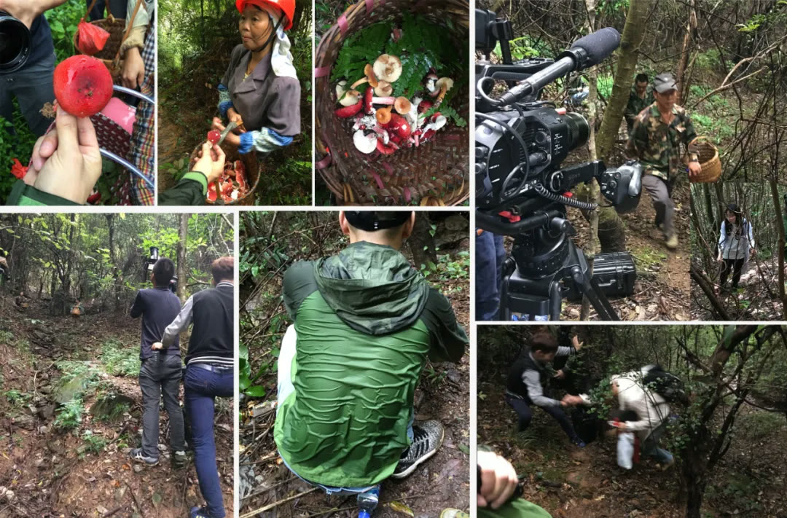
莆田PUTIEN 366
打响莆田食材节第一枪，我们信心满满2016 年我们信心满满地筹备莆田首个食材节——头水紫菜节。怎么推呢？做个海报？贴个台卡？还是干脆在商圈买广告？做任何事情，要始终围绕最终目的出发。我们首先要思考这次传播的最终目的是什么？是希望顾客购买我们的产品和服务，并且希望他能“播传“给身边的人，让更多的人来买。一切战略都是话语战略。品牌是一套话语体系，说出来的存在，没说出来就不存在！用话语创造品牌价值和产品价值。我们决定前往莆田当地蒋山村找寻好食材背后的故事。晕船、淋大雨、高温暴晒，海上找寻好食材真的太难了！凌晨 5 点出发到达渔村后，得到的消息是“天气阴晴不定，不宜出海作业”，苦等 4 小时都无法出行我们只能先返回。刚到岸接到消息又可以出海了，不敢耽搁，我们一行人立即往回赶。成功出海的兴奋，下一秒便被海上的风浪打了个稀烂。刚到紫菜养殖海域，大雨就劈头盖脸的砸下来，刺骨的寒风吹得人脸疼，简陋的小渔船没有任何可以遮挡的地方，所有人员都变成落汤鸡，但出海的机会难得，我们只能在摇晃中艰难的完成拍摄和访谈。那一天所有人因为长时间的暴晒，造成全身红肿脱皮。
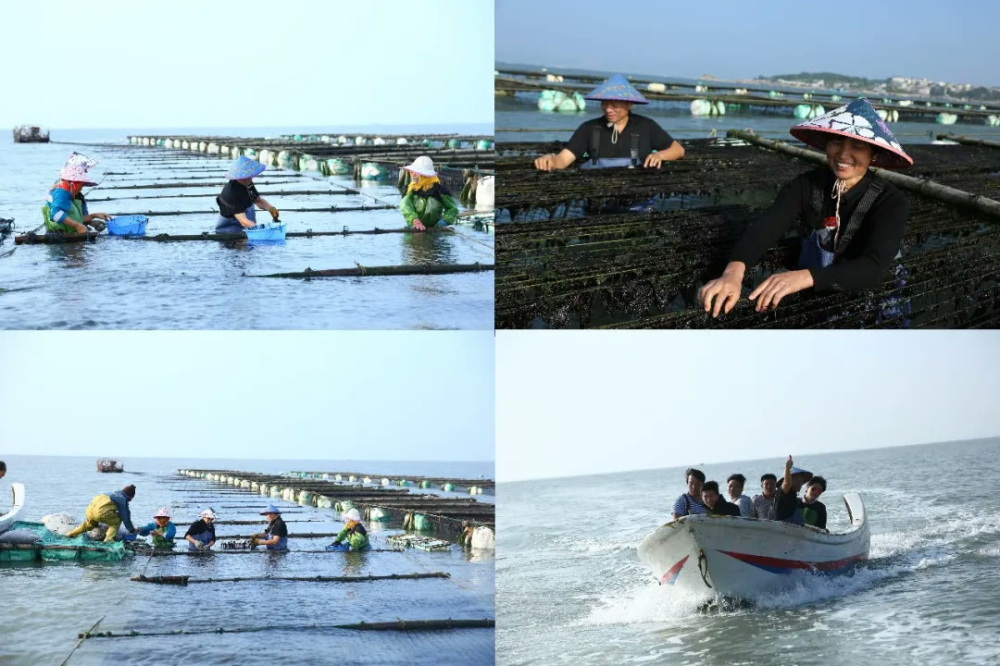
就这样在莆田最偏远的海岛老区，从早上 5 点到晚上 7 点连续 14 个小时，在风浪颠簸的海上，我们见证了渔民的辛苦与不易，用镜头记录下采摘的全过程，更重要的是在现场我们“挖”到了产品的一手信息，这太令人兴奋了！
回程的路上，产品故事的收获早已掩盖了身体的疲惫。原来莆田餐厅选用的紫菜大有来头，是珍贵的头水紫菜。只有每年第一次长成、头次采割的紫菜，才能叫做头水紫菜，一年只有 7 天黄金采摘期，采摘季节人要跟鱼抢。为了保证口感嫩滑，莆田连头水紫菜的叶片都极其讲究，每片叶片的长度要在 13 - 15厘米左右，宽度还不能超过 1 厘米，这样吃起来才有海的鲜味。马不停蹄地赶回上海后，围绕着食材节构建了一整套传播标准件，我们称之为“莆田食材节 5 个 1 工程”：一张传播海报、一个食材节菜单、一份专题报纸、一条食材节专题片、还有一个超级堆头。在当时，我们在行业内建立了，首个系统性传播推广的标杆案例。
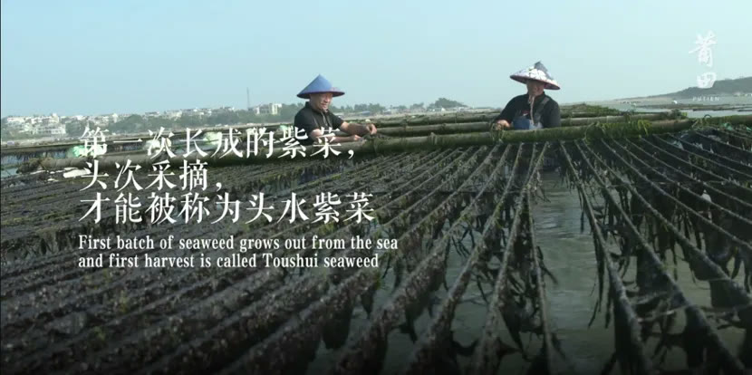
经过紧锣密鼓的推广筹备，头水紫菜上市后却一直不温不火，点单率远低于我们的预期。后来一复盘才知道，头水紫菜虽然珍贵，但是纯素菜的吸引力远没有肉菜和海鲜力度大，这也是我们收获的第一个教训。正当我们因为第一枪哑炮感到沮丧时，接到方叔叔的消息：“继续干！经营就是实践，遇到好的机会不能因为一次没效果就立刻放弃，得坚持下去。现在想想，这就是企业家的坚定和胆识，莆田第二个食材节百秒黄花鱼，登场。
事业理论决定产品科学，产品科学决定产品研发，福建菜代表作“百秒黄花鱼”一炮打响一般情况下我们吃海鲜都要吃大的，越大越好，尤其是野生的更稀罕，可莆田偏偏相反。莆田餐厅选用的是来自中国黄花鱼之乡福建宁德的小黄花鱼，而且克重必须在180 - 220g 之间，还得是当天深夜捕捞上岸，鱼肚是金黄色的那种。为什么呢？因为只有这个克重的小黄花鱼才能经受住百秒出鲜味的考验!
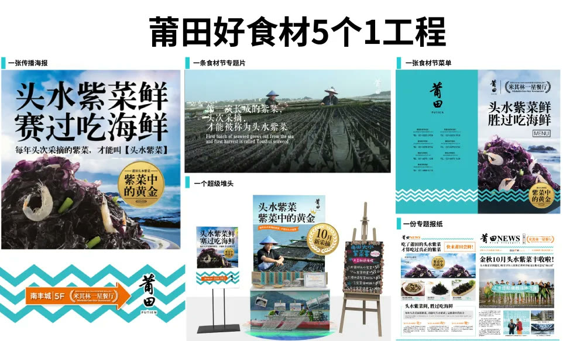
只用 100 秒蒸熟一条鱼，这是革命性的突破，也是莆田独创的烹饪手法。通常情况下蒸熟一条鱼至少需要 8 分钟，而莆田打破这一铁律，不多不少只用 100 秒就能完美出品，而且全程不加一滴水，蒸出来的汤也超级鲜美。鱼的大小、炉灶的火力、砂锅的空间、甚至调味姜、葱品种的选择，是这道菜成功的前提，这背后是莆田产品研发团队实验数千次后才摸索出的标准。这也是为什么这道菜能成为：掌握好食材，原味福建菜“的杰出代表作之一。不但征服了不爱吃鱼的女神林青霞，亲自为莆田题字“莆田好吃”，更在莆田所到之处，以鲜美原味征服各地食客，成为莆田餐厅几乎桌桌必点的“镇店之宝”!
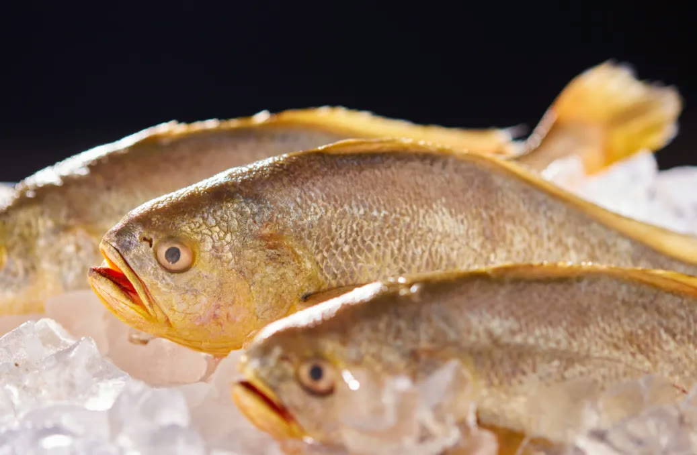
在百秒黄花鱼推广期间，我们只用一招就全线提升了黄花鱼的客单价。原来点单时大家都是一桌只点一条鱼一起分着吃。既然百秒黄花鱼的个头小，那我们就在菜单上明确标出“按位上”，一人一条！这就改变顾客原有的点餐习惯，这样一来，点单时就会按照人头来下单。把招牌变成人人必点菜，不仅能卖的更多，还能提升桌均销售。
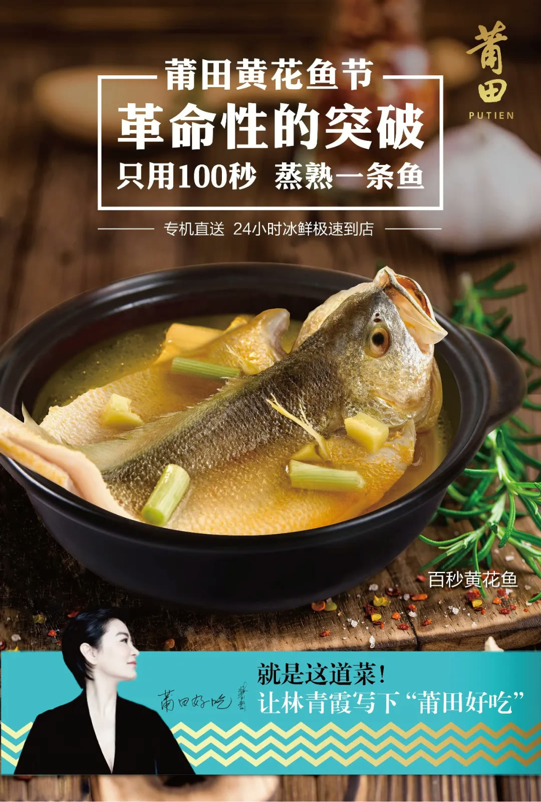
黄花鱼成功了！后续也成为莆田进入新市场开疆拓土的战略性大单品。这对我们来说，不过是迎接莆田食材节的一场热身赛，接下来又将开始新的征途！
不是不爆，时候未到！擦亮金字招牌的哆头蛏并不是所有的食材节都能一炮而成，有的可能需要经历几年的积累才能大获成功。在莆田，备受海内外媒体关注的除了百秒黄花鱼就是哆头蛏，别看现在哆头蛏是莆田口碑的代表，早在 2016 年以前这道菜还是一款平平无奇的小海鲜。2017 年在哆头蛏丰收的季节，为了更好的挖掘产品故事，项目组决定跟着蛏农下蛏田！挖蛏是又脏又累的辛苦活。蛏子们一般“埋伏”在 30cm 多深的黑泥里，为了不影响黑泥滩涂的自然环境，挖蛏仍然保留着传统的方式，不用任何机械，靠人用手来挖，挖满一盆起码要 2 小时。2 月初的莆田依然很冷，一脚踏入没过大腿的黑泥，冰冷海水很快就让双腿失去知觉，不能自拔也动弹不得。当天，我们坚持在泥里泡够 6 个小时，只为完整的记录哆头蛏蛏霸的秘密。 2017 年首次推广中我们取得了不错的成绩，受到了海内外顾客的一致好评。
你以为这就蛏霸了吗？并没有！真正让哆头蛏蛏霸全球的是“ 8 种吃法，一次点俩”，这一招让哆头蛏彻底爆了！营销是一种服务，广告是提供信息服务。一个完整的广告信息包含“三个购买”，购买理由、购买指令、购买指南。
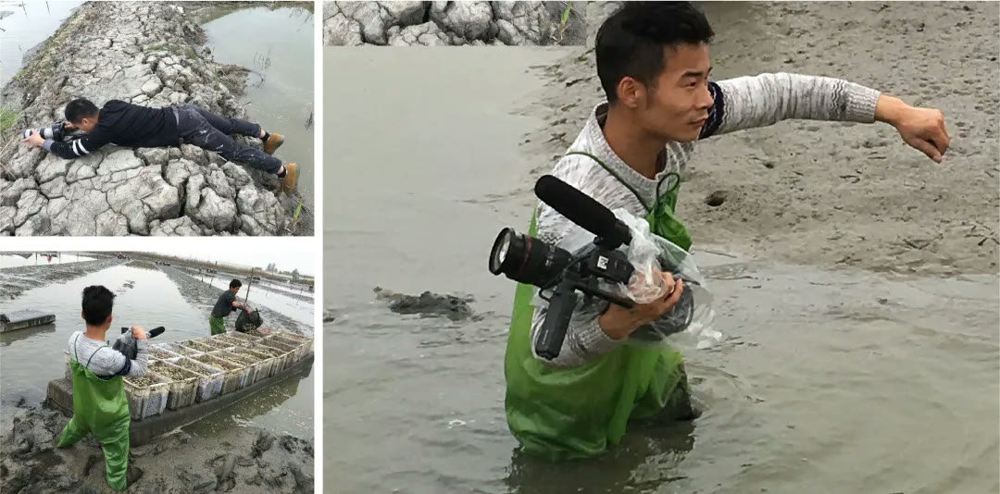
这是企业的生意经，也是为消费者提供信息服务，降低消费者的决策成本。当消费者选择你的成本越低，就有越多消费者选择你。
2022 年哆头蛏节又升级啦， 9 种吃法全线升级
创意是一个机关算尽的活儿，但你得知道机关在哪。大家想一下一般我们出去吃饭，如果已经点了一道蛏子，你要点第二道的时候，同伴一定会提醒你说已经有了一道蛏了，换个别的吃。8 种吃法 1 次点俩就是给顾客一个购买指南，就打消他的顾虑，这就是把促销转化成销售，把产品推广变成购买指令。再加上 128 元 2 道，就能让消费者快速做出决策。把产品吃法固化成品牌传播动作，形成品牌资产，莆田应该算是餐饮行业头一个。创意为生意服务，要用创意解决生意。好的创意，一定是要对客户的业绩有贡献，这靠这一招，全球 90 %的客户都会按照我们的购买指南去行动。 2018 年大陆区百桌点击率高达 95 %，香港区百桌点击率高达 71 %。这也是为什么华与华看起来平淡无奇的创意，一到在市场上总能大获成功。
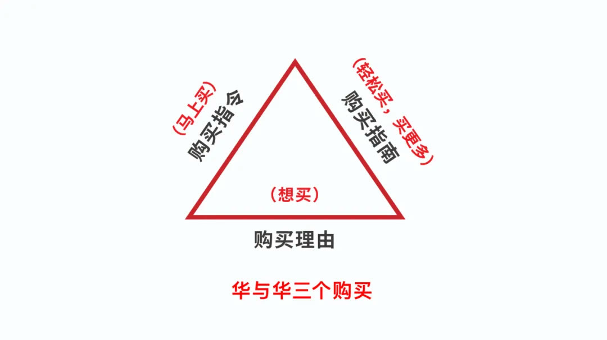
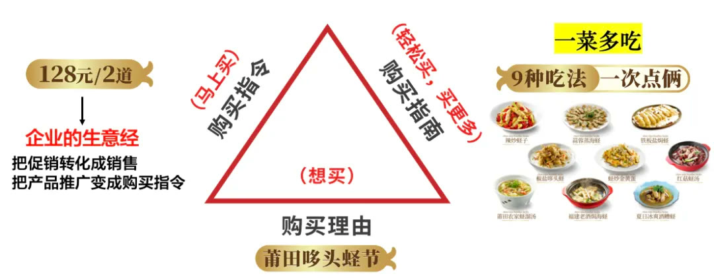
一切增长都是投资拉动，不要爆品思维，要持续投资。成熟的品牌每年应该以同样的形象、同样的话语、同样的知识，在同样的时间、同样的地点出现在消费者的面前。此后连续 6 年重复投资一句话，一个画面，一个符号，让蛏霸成为品牌最重要的产品资产！
品牌资产来源于重复，宣传的能量来源于重复在华与华我们从不鼓吹要追求爆品，因为爆品是一时的，不要一下子爆了，一下子又没有声音，对企业来说，长期细水长流的持续投入，效果超过短期的大规模轰炸。2019 年莆田集团集中兵力，在传播资源上超配，让蛏霸彻底打响莆田全球市场！这也是华与华最重要的投资观。
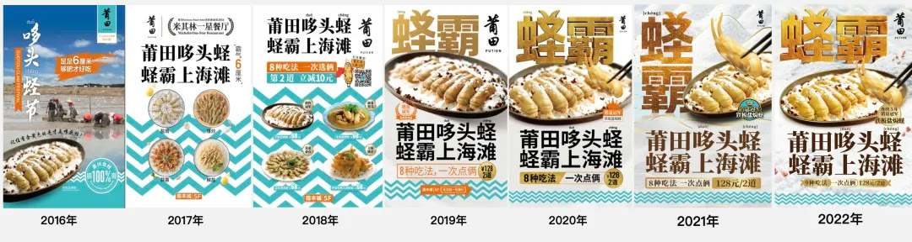
蛏霸新加坡
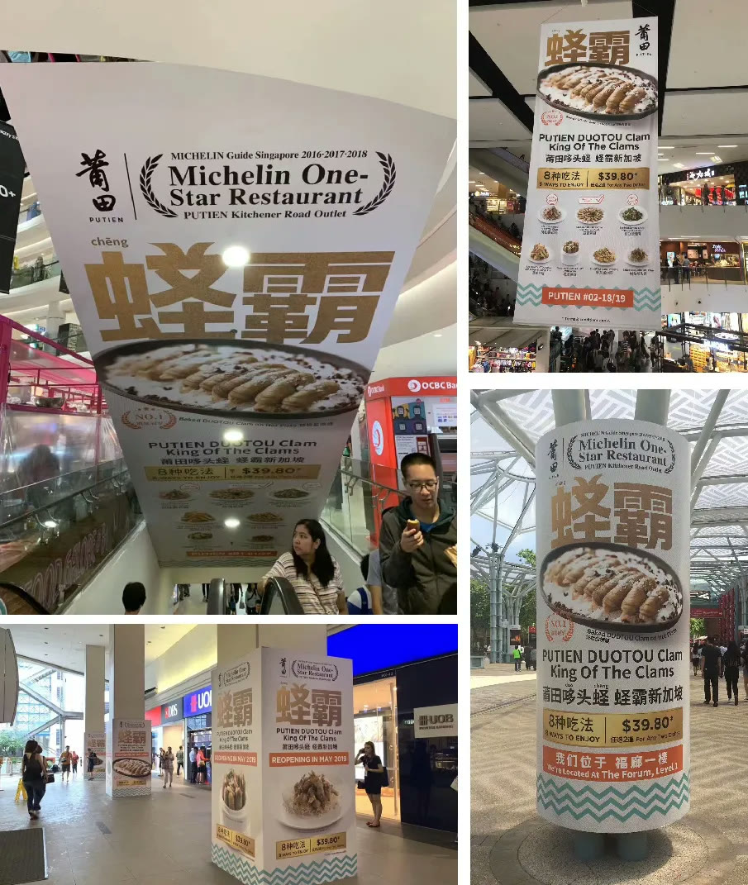
蛏霸北京城
蛏霸深圳湾
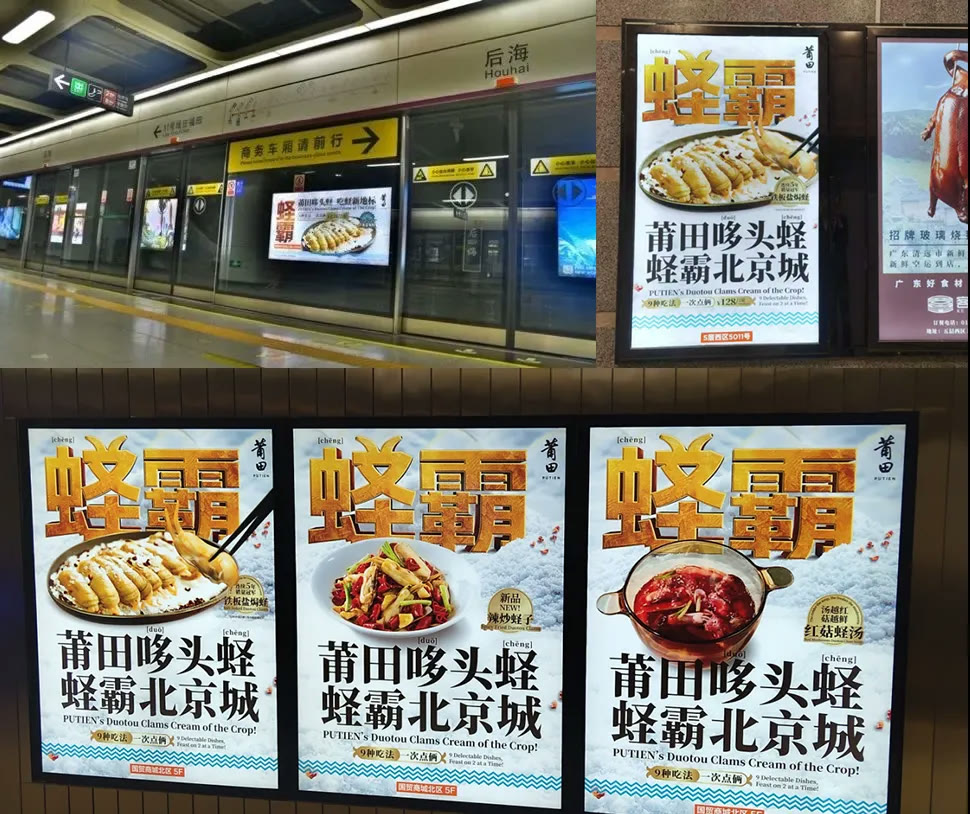
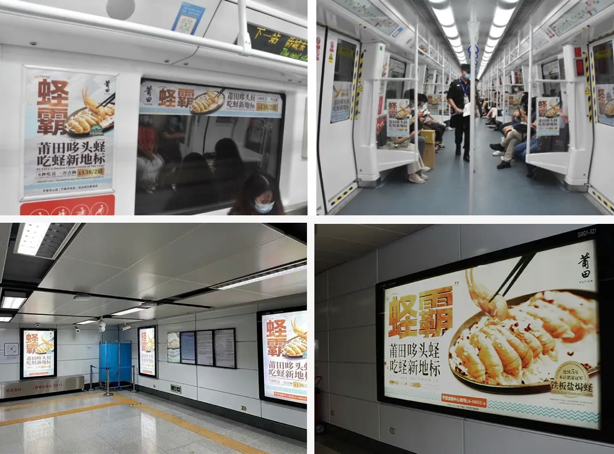
蛏霸美食圈
所有成功都是时间现象——五年蛏霸！哆头蛏是莆田所有食材节中最具爆发式的一次增长，从一个连新加坡人都不认识的一道菜，到后来成为行业内广受关注的新品类产品，莆田餐厅从源头布局打造哆头蛏产业链基地，莆田的哆头蛏也成为一线大牌餐厅指定供应产品。从最初寥寥几箱的运输量， 3 年之间飞跃至全球门店总销量 130 吨， 4 年实现销量420 %的激增，让哆头蛏彻底成为莆田的名片，成为全球消费者进店的目的地产品。2020 年- 2021 年这两年海内外市场受疫情反复的影响，部分区域市场无法销售哆头蛏，听店长说很多老顾客仍然对哆头蛏念念不忘。
只要路子对，坚持最可贵！经营就是实践，关键在于坚持
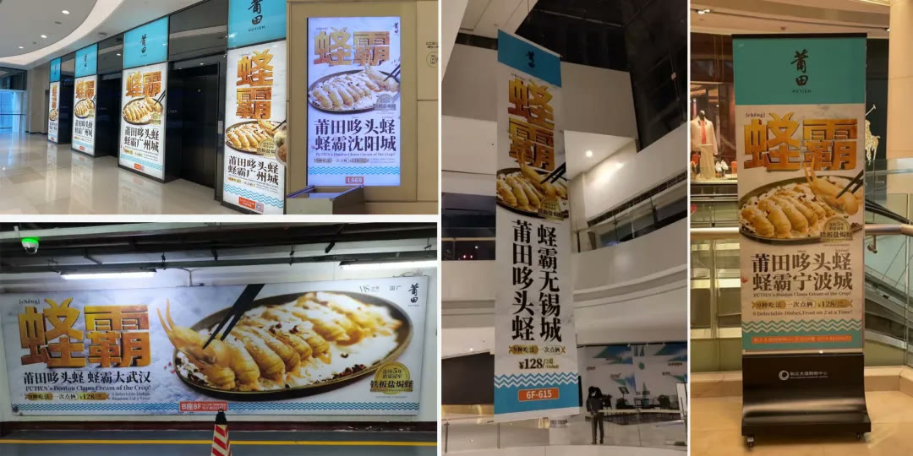
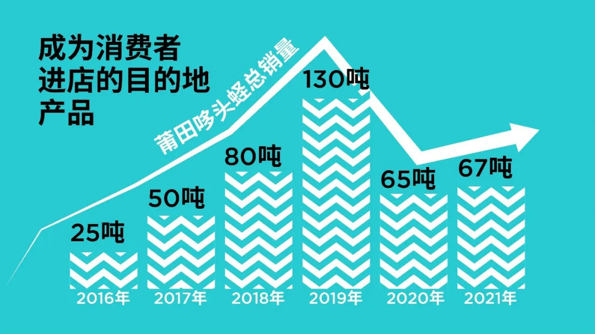
记录资产、形成资产、保护资产，沉淀资产，做莆田好食材的守护者。掌握好食材，原味福建菜的背后是我们连续 7 年深入一线，通过实地走访调查，为客户保留了最为珍贵的资料，这也是企业内部最重要的宝藏！在持续不断为客户创造价值的前提，就需要我们比客户更了解他的生意，要做客户的“生意精”。莆田食材节也不是推一道就火一道， 7 年时间我们策划并创意了 11 种好食材的推广，才沉淀出以黄花鱼、哆头蛏、鳗鱼、海蛎形成的小海鲜战队。也正是通过这样季节性的推广，淘汰不合适的，才能把好卖的产品筛选出来，才有了这样一批吃得住的明星产品。
成功的经营，就是让我们的外部交易成本和内部交易成本都变低。通过形成营销日历给顾客形成一个节奏，也给我们的工作形成一个节拍。每年重复做的事情，就是成本越做越低，在内部，莆田食材节形成所有员工一年的工作节拍，自动重复、精益求精、持续改善。从 2015 年合作初期，莆田全年营收不到 2 亿，到 2019 年全年营收接近 10 亿，短短 4 年营收增长 4 倍之多，食材节在中国市场的巨大成功,也带动了全球市场爆发式的增长，我们就这样一举用食材节统领了全球莆田的传播动作。
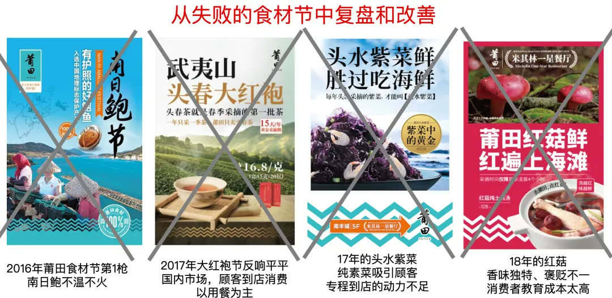
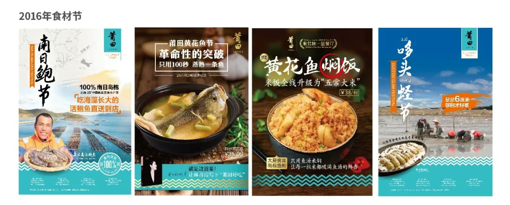
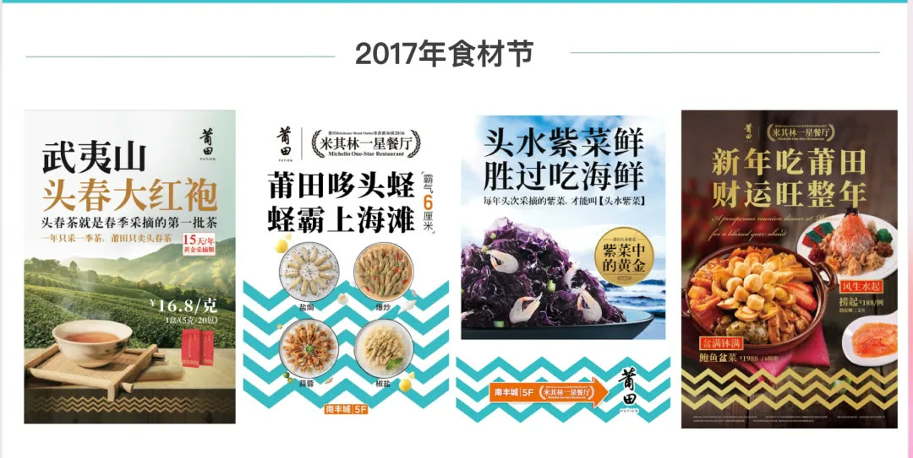
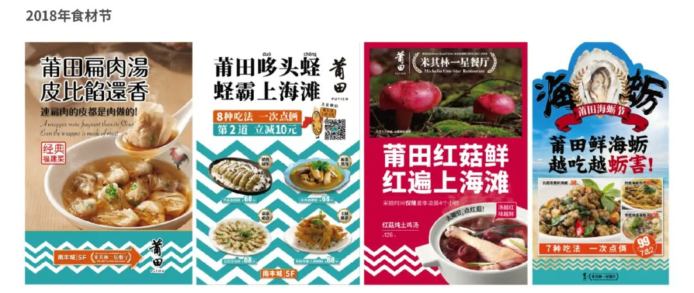
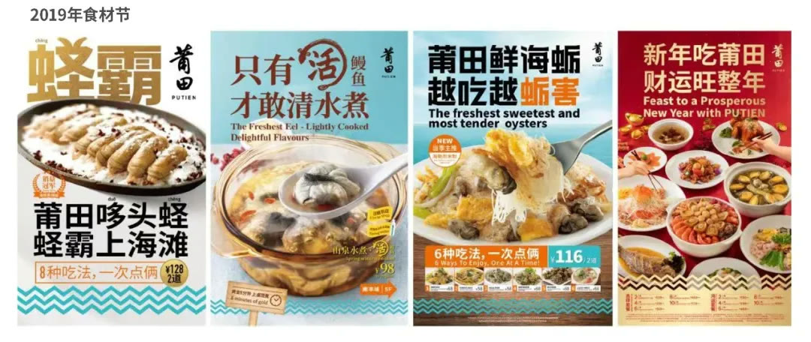
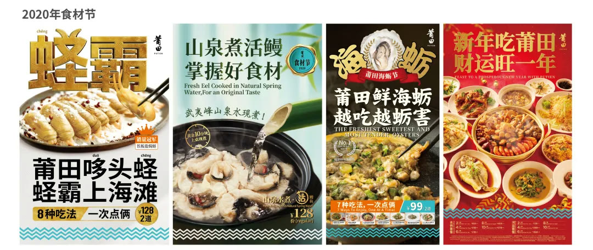
阶段 5
以文化母体组织全球传播
品牌的背后是文化
文化的深度决定品牌的根基
什么是文化？《现代汉语词典》对文化的定义：“文化是人类历史上形成的一切物质财富和精神财富的总和，有时特指精神财富。”而品牌文化呢，就是在人类文化宝库种寻找，并嫁接人类文化，并为我所用。人类生活是一个巨大的文化母体，衍生出人类文明中各种各样的戏剧。文化母体，是指我们的文化、生活中约定俗成的行为，是人类共同的经验和知识。这些文化母体，不仅在过去频繁发生过，在未来也必将发生。从古至今，但凡可以长久存在的现象，都是拥有强大的母体作为支撑，并且拥有相对固定的仪式。2014 年，微信以新年红包打通移动支付，就是文化母体四部曲的标准案例。不过，这不是华与华的案例。我们用文化母体四部曲的理论来总结微信红包的案例。第一步，寻找母体：找到一个母体行为。中国人在新年、春节会给老人送红包，会给小孩子发红包，长辈也会给晚辈发红包。这是历史悠久的一个母体行为，微信就是找到了这个母体。第二步，回到母体：使用母体符号。微信使用母体符号，设计了红包图标。母体的戏剧，是真实日常、循环往复，有它约定俗成的时间、仪式、道具，而且不可抗拒、必然发生，发生的形式是集体无意识、自发卷入。现在，时间、仪式、道具都有了，每当春节，全国人民以集体潜意识自发卷入微信红包的派发。
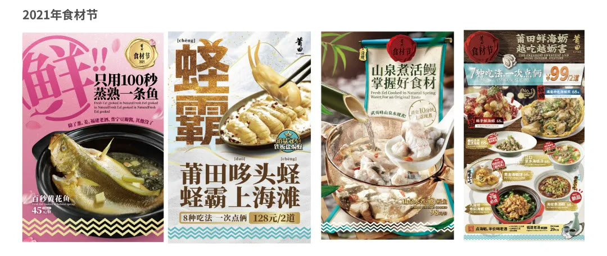
第三步，成为母体：成为母体风俗的一部分。微信红包取代了物理的红包信封，成为红包的新母体。第四步，壮大母体：成为人类风俗，活进文化母体。红包文化被微信弘扬壮大了，现在不是过年过节才发红包，而是已经发展到没有什么问题是红包不能解决的地步，有喜事就在微群发红包，开会迟到也要发红包。
有战略价值的品牌活动从不是一时性，而是寄生于文化母体。可以年复一年，重复去做、可以积累品牌资产的活动！创意最值钱的地方，在于它的生命力有多长。很多创意很牛逼，一夜之间整个互联网都炒翻了，但那是雕虫小技，因为它们只有一个星期的生命力。我们只做那些有 100年生命力的创意。
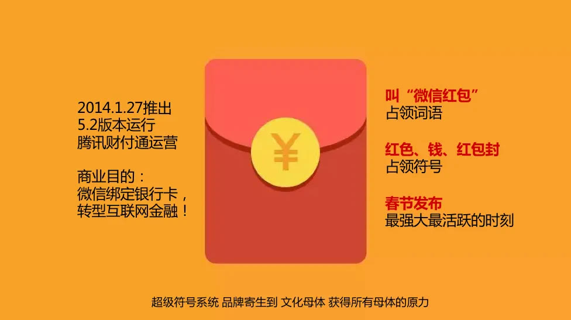
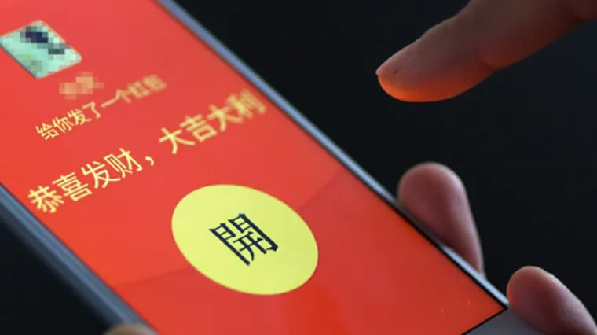
2019 年 6 月 4 日，由华与华创意策划，莆田市文化和旅游局、新加坡莆田餐饮集团联合主办的“掌握好食材，原味福建菜—— 2019 年首届莆田哆头蛏节发布会暨挖蛏仪式”，在福建省莆田市涵江区三江口镇哆头村昭惠庙前隆重举行。时任莆田副市长陈惠黔在现场给予了高度评价：“要把莆田哆头蛏节做成莆田海洋美食的一张名片！”
这场活动不仅受到了当地政府的大力支持，也吸引了新加坡《联合早报》、马来西亚《南洋商报》、环球时报、人民日报、腾讯网、网易网、今日头条、福建电视台等 30多家知名海内外媒体的传播报道，从国内火到国外！
那么这场活动是怎么做起来的呢？就是先找到了哆头蛏的文化母体，通过还原古老习俗回到母体，再通过仪式，让品牌置入到仪式成为母体的一部分，通过销售、通过流行，让母体更加壮大，也让品牌活进了文化母体。
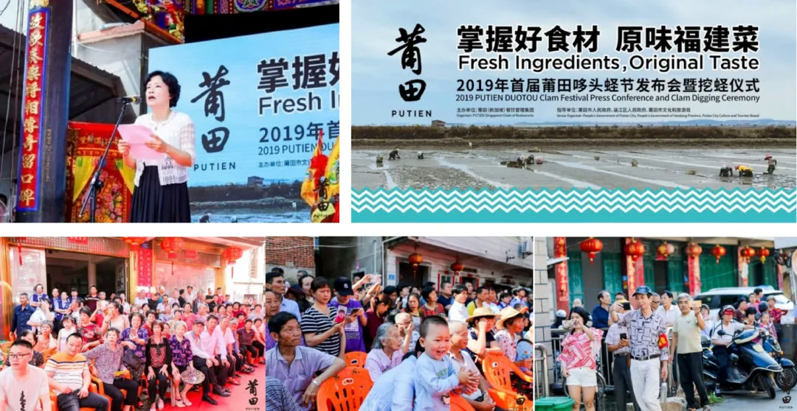
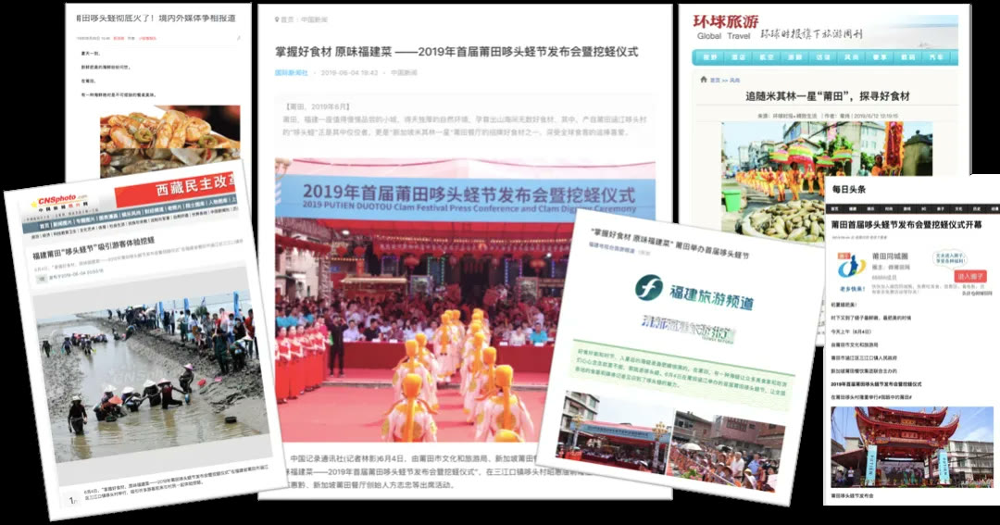
第一步，寻找母体：三下莆田，访老农、翻县志，17天终于挖出了600年前的蛏子祈福仪式莆田哆头村，是一个有着 600 多年养蛏历史的海边小渔村，这里的居民世代养蛏，养出的蛏子个大肥美。
活动前，我们走访了整个哆头村，从村头到村尾地访谈当地最年长的那批老人们，拉着当地文化部同事详细了解坊间故事、翻阅数十本古书杂文，终于让我们发现原来靠海吃海的蛏农们一直以来有着“祭拜吴圣天妃”、“蛏池取圣水”祈福哆头蛏丰收的古老习俗。哆头村的老人们介绍，昭惠庙里供奉的吴圣天妃很早就开始尝试养蛏，她在莆田市兴角山上的建有一处小水塘，把蛏苗放进其中，取名“蛏池”。一年后，养出的蛏子个大肥美，肉质鲜甜。哆头的渔民闻讯前来取经，吴圣天妃全部倾心相授。打那之后，每当哆头蛏播种季节来临时，蛏农们就会连夜前往兴角山拜求“圣水”，将“圣水”洒在自家蛏田祈求哆头蛏永远丰收。找到吴圣天妃与哆头蛏圣水祭祀这一文化习俗后，哆头蛏节就有了深厚的文化根基和群众基础。
吴圣天妃像，于莆田兴角山祖宫
第二步，回到母体：不创造，只改造！唤醒、还原、放大具有千年文化原力的祈福仪式，哆头村再现600年后第一场祈福仪式创新的前提是守旧。文化母体以仪式和符号的形式体现，并且有它约定俗成的时间、仪式、道具。我们不创造新的东西，只是改造老的东西。给你一个你看起来非常眼熟、甚至平淡无奇的东西，因为只有这样的东西它才是最有生命力的。我们的工作就是找到这个母体并回到这个母体，牢牢寄生其中。在听取当地百姓意见，并与当地会长、村中长者反复沟通后，我们基于当地祈福的传统习俗，对有着 600 多年历史文化哆头蛏节的祭祀祈福仪式进行了唤醒、还原和放大，即“凌晨蛏池取圣水、圣水巡游、圣水祭祀三献礼、蛏田撒圣水”。
凌晨蛏池取圣水：弟子们在吴圣天妃庙净洗、上香后，凌晨 3 点连夜前往兴角山迎取圣水
圣水巡游：大街小巷锣鼓齐鸣，圣水巡游后，被恭迎到昭惠庙前
圣水祭祀：圣水祭祀祈福仪式上，依古礼行三献礼祈福 ：点香、上香、行拜谢礼
蛏田撒圣水：依古礼，将圣水撒到蛏田滩涂，祈求哆头蛏丰收
说来也巧，莆田前些日子一直都阴雨绵绵，没想到活动当天天公放晴，乡亲们都说是吴圣天妃的庇佑。活动当天全村都激动了，整个哆头村就像过年一样热闹。村长激动地说，一百多年没搞的仪式，你们竟然搞成了！
第三步，成为母体：让品牌成为人类的风俗文化母体四部曲后两部非常重要！就是成为母体，壮大母体，因为到了这一步，就已经让品牌成为人类的风俗，活进文化母体也就活进历史和未来了。在华与华方法，我们称之为“品牌风俗论”——让品牌成为一方人民，甚至全人类的风俗。对于莆田餐厅来说，只要进入母体，占领母体当中核心的仪式，就获得了生命，就能成为一个强大的品牌。在哆头蛏节的现场，我们增加了“蛏田挖蛏”“蛏地煮蛏”的环节，让它们成为整个仪式的一部分。同时莆田餐厅创始人、莆田首席食材官方叔叔现场发布了哆头蛏官方“蛏霸”标准，并在蛏田立下了莆田餐厅专属定制的哆头蛏地标及蛏霸标准的认证牌。
莆田当地政府授予莆田餐厅：福建哆头蛏指定推广机构
哆头蛏地标及蛏霸标准牌
莆田餐厅哆头蛏节专属道场
这样，通过一系列的仪式，整个莆田哆头蛏节就有了可传承的符号，熟悉的仪式感又得到了当地政府和群众的支持参与。“蛏霸”也将莆田餐厅与哆头蛏节牢牢绑定在一起，而且以后只要举办哆头蛏节，都会引导大家来蛏子地标这里，这里也就成为当地的文化名片。
第四步，壮大母体：地方品牌，全球共享。年年做，重复做！把福建哆头蛏推向全国、走向世界任何事业都是乡土的，要留住我们品牌的乡愁。生意不只是企业的生意，更是一方百姓的生计。莆田餐厅倾力打造的哆头蛏节，不仅帮助哆头村建立起自己的“哆头蛏”品牌，帮助产业增产、蛏农增收。也是让海内外更多的人知道哆头蛏，并且能够吃到来自原产地的好食材。投资母体就是品牌积德。品牌积德不是捐学校做慈善，是回到母体、壮大母体，当你的品牌获得了一方人民的支持，那就是积德给你带来的壁垒！
把品牌植入顾客的人生，成为品牌节日和顾客的生活习惯，最终就成为了人们生活中的一部分。随着时间的推移，这个节日就会成为当地的风俗。知道的人越来越多，购买就越多。两年多过去了，莆田哆头蛏节的品牌效能持续发酵，已成为当地网红打卡地和当地蛏农的品质背书。
阶段 6
让“莆田蓝”成为全球品牌资产
品牌管理全球化
一举制胜海内外
中餐里的莆田蓝，开到哪就火到哪为什么华与华方法能放之全球皆可用？因为我们提供的是哲学级洞察、原理级的解决方案，只要餐饮、快消行业的本质不变，不管是中国市场，还是新加坡、马来西亚、印尼、菲律宾，抑或日韩、欧美市场，华与华方法都能因地制宜，提供高效的、在地化的品牌管理服务。从 2015 年超级符号水波纹的亮相，我们一举完成了莆田全球品牌的管理升级，让莆田蓝和水波纹在全球市场遍地开花。

2019 年，莆田餐厅继续出征东南亚，把餐厅开进了马来西亚，并迅速开出 10 家店，凭借具有传播力的超级符号莆田蓝、水波纹和独有的好食材及烹饪手法，一举成为当地中餐中高端品牌的翘楚。毫不夸张地说，在马来西亚只要有莆田餐厅的地方，就会成为周边每一个马来华人和新加坡人必定要光顾的地方。
中国市场能用，海外市场也管用——莆田好食材传播战随着好食材战略的全面践行，食材节传播成为品牌全球管理的主旋律。再到海外市场在地化的产品开发、事件传播的成功实践，一路走来，也是华与华方法在全球化的品牌管理工作上成功验证。2016 年至今，我们用食材节统领莆田全球品牌传播节奏，所有门店力出一孔,成为整个集团最高行动纲领。在海外市场有节奏的展开一系列传播战役，从明星食材到门店招牌，每一次都为莆田的品牌建设添薪续力，向全球市场要销量。
好创意一招鲜！“莆田食材节”征服全大马，全年营收占比高达50%食客对好食材的追求是不分国界和文化的。莆田食材节在海外不仅没有水土不服，反而成为当之无愧的吸客利器，极大提升了门店运营和管理的效率，这就是重复的力量！在外部顾客脑海中，每年以固定时间、固定主题，重复推广，这么一年一年的积累，也就建立起品牌对消费者的“驯养。到时间就有行动反射，来之前会形成期待，时间长了就形成了顾客对品牌的记忆。
在内部，莆田食材节形成所有员工一年的工作节拍，从总部到各区域每个人都知道要做什么，自动重复、精益求精、持续改善。
每年春节都是莆田生意最火爆的时期，这几年在春节期间我们为莆田推出了新春传播大菜——盆菜节，自打推出后就从国内一路火到海外市场。2021 年在马来市场盆菜销售额同比增长 90 %。 2022 年整个销售期间盆菜销量同比增长 163 %，店长们直呼“卖爆了！”新加坡是所有区域销量增长最大的市场，销售数量同比增长了 136 %，销量贡献率超过 50 %。
2022 年 4 月我们连同莆田内部，一起联合策划推出了年度黄花鱼推广活动，在马来西亚市场一经推出反响热烈，短短一周就成为到店消费的明星产品，客流量环比提升10 %，同时也带动了当月营收提升了 28 %。
莆田餐厅食材好，早已成为马来食客共同的品牌认知，并愿意为之反复买单。莆田好食材干货一经推出，立马受到顾客的热烈反响。店长告诉我们，很多老顾客都是几盒几盒的买回家。
除了直营店外，莆田在印尼、菲律宾还发展了加盟店。对加盟店来说，统一的品牌系统、统一的品牌推广，也更加方便建立和管理品牌。目前，莆田海外加盟店一共有 13家，店长说，莆田不管开在哪里，都会迅速成为当地中餐的头牌，是当地华人聚会的定点打卡点。
品牌荣誉全球同庆，2016年打响海内外传播第1仗2016 年是莆田餐厅引以为荣的一年，莆田新加坡吉真那路創始店荣获米其林一星殊荣，成为新加坡有史以来第一批获此殊荣的中餐品牌。同一年，莆田香港铜锣湾店也获得了香港米其林必比登推荐餐厅的荣誉。
通常情况下，品牌获得荣誉我们拍个照、发个朋友圈，最多也就是把奖状挂在墙上裱起来是不是？但当时我们就敏锐的感知到“米其林荣誉”的价值，并牢牢抓住了这个传播契机，将米其林一星荣誉写进莆田的历史里，烙印在整个集团形成品牌永恒的资产。米其林是什么？它不仅仅是荣誉。米其林就是餐饮界的全球通行证，不受年限限制，代表着餐饮业的最高殊荣，能为品牌带来巨大的能量和效益。最经典的案例——鼎泰丰。一直以来都以“世界十大美食餐厅”为核心传播话语， 2010年后改为“米其林一星肯定的美食”，从此这句话就一直被用在各个地方，成为品牌端的固定推广动作。鼎泰丰将美国纽约时报评选为“世界十大美食餐厅之一”的整版报道，作为发光的形象墙刻在在店门口。
还有大家熟知的茅台酒也是，自 1915 年获得巴拿马万国博览会金奖，尽管已经过去了超过 1 个世纪，茅台依然传播并使用至今一样。这就是一次提名，终生受用。
如何最快释放事件魅力呢？华与华方法中提到，成功就要大声说、重复才有积累。商业动机不应被掩饰，而是要被放大，要与人类宏大叙事相结合。这是米其林第一次走进新加坡，不仅是莆田的大事，更是国家的大事，要不断被重复、被放大，激发全体民众的认知。门店是餐饮品牌最大的元媒体，要把它作为米其林亮相大众的核心阵地，放大米其林一星的声量。让米其林一星上墙！我们在门店开辟了品牌墙，把荣誉直接刻成碑文，写进品牌永恒的资产。
让荣誉成为节日，让喜事成为盛事。这样也就形成了顾客口口相传的品牌言说，成为品牌信息传播的一部分，在全球市场快速形成消费者对莆田品牌及产品一致认知。这个在门店的品牌形象专区，不仅成了吸引顾客进店的最强购买理由之一，也是全球顾客的固定打卡区。
我们抓住这一传播时机，借助米其林势能，推出午市聚客产品——莆田午市头等餐，实现品牌经营上的巨大突破，午市头等餐上市初期门店日营业额更是创下历史新高，这就是事件带动产品推广，把传播活动产品化。
2019 年莆田餐厅从新加坡 20 多万家企业中脱颖而出，入选为新加坡“企业腾飞计划”，这是由新加坡企业发展局（ Scale SG programme ）推出，重点扶持本地具有潜力的高增长企业向世界加速扩展。首批入选的企业只有 25 家，“莆田”正是其中之一。
右排第一莆田餐厅创始人方志忠先生
开疆拓土打头阵，从0到1为莆田全球小店模式开模打样——香港机场之战除了助力莆田海外市场的开拓，在新业态的探索上我们也与莆田同行。 2018 年 12 月 19日莆田香港机场店正式开业，这也是我们从 0 到 1 为莆田新业态小店模式的成功开模。以营销 4P 为起手式，围绕机场店中店模式进行产品开发，实现了莆田小店模式的高效运营。考虑到香港餐饮市场的整体消费习惯和产品需求，以及机场这一特殊渠道。我们从一开始，就用运营快餐店的思维去规划整个机场店的动线，通过动线设计缩短操作时间、人力成本，优化点单的效率，确保从点单到出餐 3 分钟内完成。动作 1 ：极致的门面设计，快速跳出货架，获取品牌流量主权香港机场被誉为全球交通及资讯枢纽，也是一个大流量的消费场所。用醒目的水波纹和大面积的莆田蓝刷新门头，形成品牌最具代表的视觉符号。在琳琅满目的机场中，显眼的品牌标识能大大的降低顾客的发现成本，它在替我们招呼客人：“看这里！看这里！”吸引到我们的店来。这一招一出去，瞬间让旁边的门店都黯然失色。
同时，在门店的人流必经之地，开发并设计了扁肉汤明档，这可是品牌最佳的广告位。所有的小吃产品现点现做、现包现卖，将明档打造成产品销售的热卖舞台，既吸睛又吸客。
动作 2 ：为渠道开发产品，围绕着“快”形成套餐化产品组合。设计菜单就是设计消费者的选择逻辑。在机场，快速解决一顿饭才是关键，需要高效的套餐产品。我们同莆田团队一起设定了 10 款套餐产品，包含“主食+小菜+饮品”，满足门店 3 分钟出餐要求，同时聚焦产品 SKU ，解决了备货、采购的问题，降低库存的压力。
莆田机场店的亮相立刻成为航站楼内美食打卡的新地标， 2019 年香港区上半年营收增长 40 %，机场店营收占比达到 11 %，很多旅客拖着箱子也要赶来吃上一口。店长说：“我哋品牌设计、餐具、包装，都係全场最高嘅。在国外开店向国际进军，莆田餐厅的全球化蓝图正在逐渐展开，一步步变成现实。云帆直挂，越山向海，从新加坡出发，开进马来、印尼、菲律宾等东南亚国家，又一路凯歌开到中国。今后，欧美日韩也必将成为莆田进军的国际新市场！
全文总结
成功是一种时间现象，所有的成就都来源于时间积累。华与华与莆田的 7 年，稳扎稳打步步为营。我们以坚定的战略定力，从超级符号到品牌战略，一举建立莆田品牌长效机制，在莆田的第一个五年计划上，取得了“从 0 到 1 ”的开创性成果，为企业的永续经营保驾护航！方叔叔感叹：“感谢华与华，让莆田没有走过一步弯路”。华总经常说，让我们的品牌全球化，就必须让我们的知识全球化。莆田案例的成功，是华与华开启海外出征和全球服务的第一步！也是我们立足于全球市场，用最先进的管理智慧、最先进的管理方法——华与华方法孵化和培育全球化品牌的一次成功实践！
助力莆田成为国际连锁中餐第一品牌，把福建菜开遍全球，尽管进军国际市场必将和众多国际大企业同台竞争、将面临更大的挑战，但我们有信心用华与华方法，持续为莆田餐厅的全球化稳健发展保驾护航！